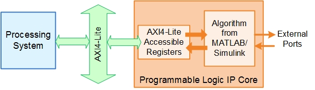
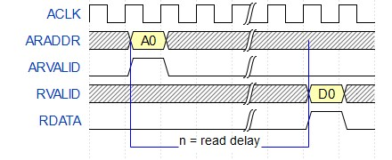
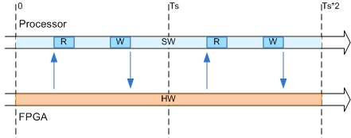
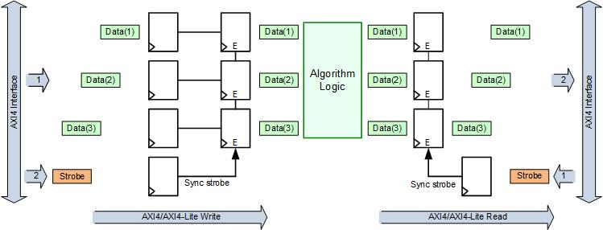

IP Core User Guide
Theory of Operation
This IP core is designed to be connected to an embedded processor with an
AXI4-Lite interface.
The processor acts as master, and the IP core acts as slave. By accessing the generated registers via the AXI4-Lite interface, the processor can control the IP core, and read and write data from and to the IP core.
For example, to reset the IP core, write 0x1 to the bit 0 of IPCore_Reset register. To enable or disable the IP core, write 0x1 or 0x0 to the IPCore_Enable register. To access the data ports of the MATLAB/Simulink algorithm, read or write to the associated data registers.

The "Register Interface Read Pipeline" was specified as 0 for the IP core. The default read delay for the AXI4 register inteface is one clock cycle.
Depending on the selected "Register Interface Read Pipeline" value and IO connected to the AXI4 interface, register pipelining is introduced in the read adress decoder logic.
For this model readable AXI4 slave registers are 3 and read delay for each AXI4 register is n = 1 clock cycles. The following diagram depicts the read functionality of the AXI4 registers.

Processor/FPGA Synchronization
The
Free running
mode means there is no explicit synchronization between embedded processor software execution (SW) and the IP core (HW). SW and HW runs independently. The data written from the processor to IP core takes effect immediately, and the data read from the IP core is the latest data available on the IP core output ports.

Vector Data Read/Write with Strobe Synchronization
Vector data and data whose bit width is wider than the AXI4 register width (32 bits) use multiple registers and therefore require multiple sequential AXI4 reads/writes. All such data is treated as synchronous to the IP core algorithm logic. Additional strobe registers added for each such input and output port maintain this synchronization across multiple sequential AXI4 reads/writes. For input ports, the strobe register controls the enables on a set of shadow registers, allowing the IP core logic to see all the updated data elements simultaneously. For output ports, the strobe register controls the synchronous capturing of data elements to be read.
To read a data port that uses multiple registers, first write the strobe address with 0x1, then read each desired data element from corresponding address range. To write a data port that uses multiple registers, first write each desired data element, then write 0x1 to the strobe address to complete the transaction.
To read data whose bit width is wider than the AXI4 register width (32 bits), the individual 32-bit data elements should be concatenated after reading. For write operations, the data should be sliced into 32-bit sections before writing.

Xilinx Vivado Environment Integration
This IP Core is generated for the Xilinx Vivado environment. The following steps are an example showing how to integrate the generated IP core into Xilinx Vivado environment:
1. The generated IP core is a zip package file under the IP core folder. Please check the Summary section of this report for the IP zip file name and folder.
2. In the Vivado project, go to Project Settings -> IP -> Repository Manager, add the folder containing the IP zip file as IP Repository.
3. In Repository Manger, click the "Add IP" button to add IP zip file to the IP repository. This step adds the generated IP into the Vivado IP Catalog.
4. In the Vivado project, find the generated IP core in the IP Catalog under category "HDL Coder Generated IP". In you have a Vivado block design open, you can add the generated IP into your block design.
5. Connect the AXI4-Lite port of the IP core to the embedded processor's AXI master port.
6. Connect the clock and reset ports of the IP core to the global clock and reset signals.
7. Assign an Offset Address for the IP core in the Address Editor.
8. Connect external ports and add FPGA pin assignment constraints to constraint file.
9. Generate FPGA bitstream and download the bitstream to target device.
If you are targeting Xilinx Zynq hardwares supported by HDL Coder Support Package for Xilinx FPGA and SoC Devices, you can select the board you are using in the Target platform option in the Set Target > Set Target Device and Synthesis Tool task. You can then use Embedded System Integration tasks in HDL Workflow Advisor to help you integrate the generated IP core into Xilinx Vivado environment.